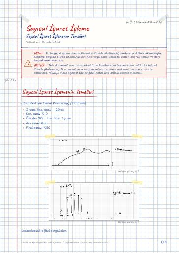
Sayısal İşaret İşlemenin Temelleri
Sayısal İşaret İşlemenin Temelleri · Önemli işaretler
Fundamentals of Digital Signal Processing — lecture notes and homework at Gebze Technical University (GTU) Electronics Engineering
Ayrık zamanlı işaretler ve sistemler, konvolüsyon, z-dönüşümü, ayrık Fourier dönüşümü ve FFT, sayısal filtre yapıları.
Discrete-time signals and systems, convolution, the z-transform, the discrete Fourier transform and FFT, and digital filter structures.
Bu sayfada: Genel Ders Notları Dijital Notlar (LaTeX) Ödevler
El yazısı notların LaTeX ile yazılmış, aranabilir dijital versiyonları. Şablon ve derleme: latex-sablon.

Sayısal İşaret İşlemenin Temelleri · Önemli işaretler
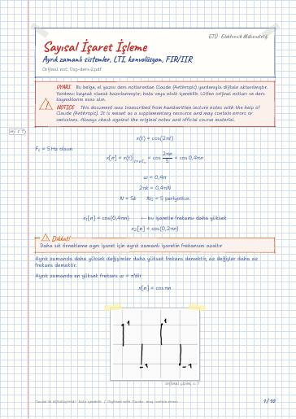
Systems · Linear system · Time invariant Systems · Nedensel sistemler · Kararlılık (BI-BO) · LTI Systems

Örnek · DTFT · Properties of DTFT · The convolution Theorem
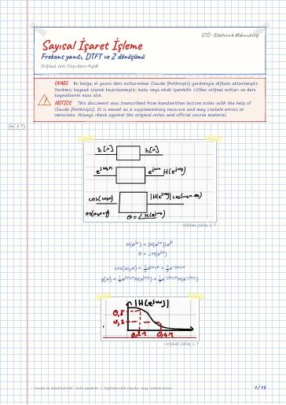
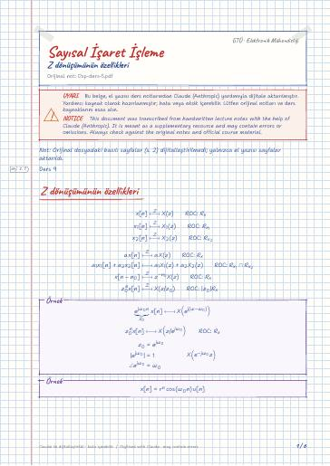
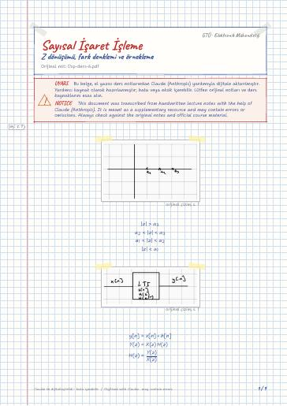
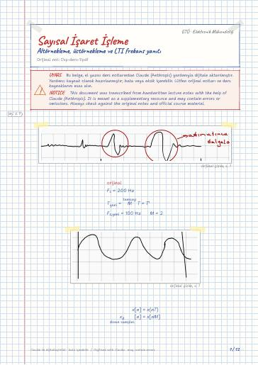
Down sampling · Up sampling · Frequency Response of LTI systems
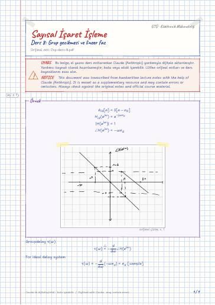
Frequency Response · Minimum phase systems · Linear Phase Filters · Type-I · Type-II · Type III

Dsp ders 9 · Structures for discrete-time system · IIR Filter Design · Flow notation · Block diagram notation · Direct Form-I
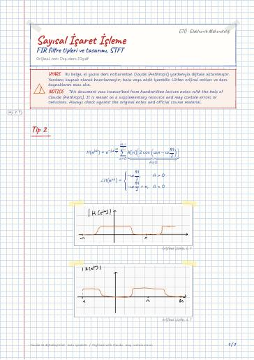
Tip 2 · Bant söndüren · Filter Specifications · Tip 1
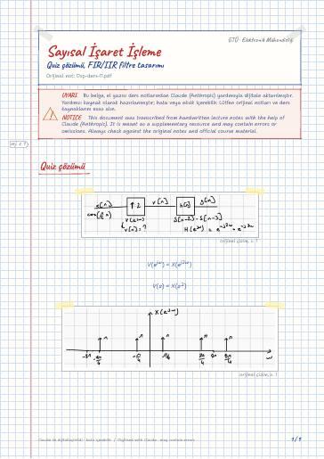
Quiz çözümü · FIR Filter Design Using windows · IIR Filter Design · Impulse Invariance · The Filter Design by Approximation of Derivation · IIR Filter Design by the Bilinear Transformation
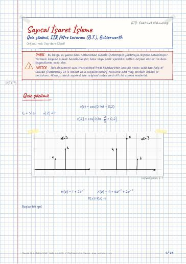
Quiz çözümü · 3. soru · IIR Filter Design by the B.T · Örnek · Specleri belirleyelim · EX: Design LPF, B.T
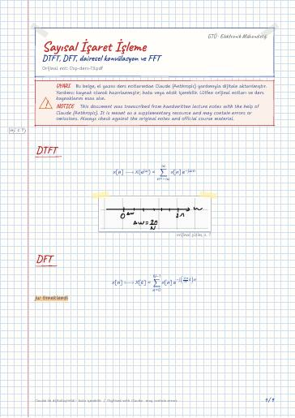
DTFT · DFT · Periodic sequences · Discrete fourier series · Periodic Convolution · Linear Convolution
Elektromanyetik Dalga Teorisi · Haberleşme Laboratuvarı · Kontrol Sistemleri · Sayısal Haberleşme · Sayısal İşaret İşleme Laboratuvarı
GitHub'da klasörü aç← 6. Dönem
Ders materyallerinin hakları ilgili öğretim üyelerine ve GTÜ'ye aittir; eğitim amacıyla paylaşılmıştır.